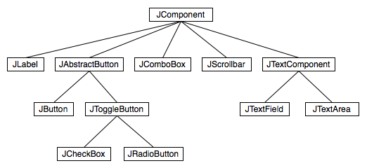

Section 1.6
The Modern User Interface
When computers were first introduced, ordinary people -- including most programmers -- couldn't get near them. They were locked up in rooms with white-coated attendants who would take your programs and data, feed them to the computer, and return the computer's response some time later. When timesharing -- where the computer switches its attention rapidly from one person to another -- was invented in the 1960s, it became possible for several people to interact directly with the computer at the same time. On a timesharing system, users sit at "terminals" where they type commands to the computer, and the computer types back its response. Early personal computers also used typed commands and responses, except that there was only one person involved at a time. This type of interaction between a user and a computer is called a command-line interface.
Today, of course, most people interact with computers in a completely different way. They use a Graphical User Interface, or GUI. The computer draws interface components on the screen. The components include things like windows, scroll bars, menus, buttons, and icons. Usually, a mouse is used to manipulate such components. Assuming that you have not just been teleported in from the 1970s, you are no doubt already familiar with the basics of graphical user interfaces!
A lot of GUI interface components have become fairly standard. That is, they have similar appearance and behavior on many different computer platforms including Macintosh, Windows, and Linux. Java programs, which are supposed to run on many different platforms without modification to the program, can use all the standard GUI components. They might vary a little in appearance from platform to platform, but their functionality should be identical on any computer on which the program runs.
Below is a very simple Java program -- actually an "applet," since it is running right here in the middle of a page -- that shows a few standard GUI interface components. There are four components that the user can interact with: a button, a checkbox, a text field, and a pop-up menu. These components are labeled. There are a few other components in the applet. The labels themselves are components (even though you can't interact with them). The right half of the applet is a text area component, which can display multiple lines of text, and a scrollbar component appears alongside the text area when the number of lines of text becomes larger than will fit in the text area. And in fact, in Java terminology, the whole applet is itself considered to be a "component." Try clicking on the button and on the checkbox, and try selecting an item from the pop-up menu. You will see a message in the text area about each action that you perform. You can type in the text field, but you might have to click on it first to activate it. When you press return while typing in the text field, you will see a message in the text area:
Now, Java actually has two complete sets of GUI components. One of these, the AWT or Abstract Windowing Toolkit, was available in the original version of Java. The other, which is known as Swing, is included in Java version 1.2 or later, and is used in preference to the AWT in most modern Java programs. The applet that is shown above uses components that are part of Swing. If your Web browser uses an old version of Java, you might get an error when the browser tries to load the applet. Remember that most of the applets in this textbook require Java 5.0 (or higher).
When a user interacts with the GUI components in this applet, an "event" is generated. For example, clicking a push button generates an event, and pressing return while typing in a text field generates an event. Each time an event is generated, a message is sent to the applet telling it that the event has occurred, and the applet responds according to its program. In fact, the program consists mainly of "event handlers" that tell the applet how to respond to various types of events. In this example, the applet has been programmed to respond to each event by displaying a message in the text area.
The use of the term "message" here is deliberate. Messages, as you saw in the previous section, are sent to objects. In fact, Java GUI components are implemented as objects. Java includes many predefined classes that represent various types of GUI components. Some of these classes are subclasses of others. Here is a diagram showing some of Swing's GUI classes and their relationships:

Don't worry about the details for now, but try to get some feel about how object-oriented programming and inheritance are used here. Note that all the GUI classes are subclasses, directly or indirectly, of a class called JComponent, which represents general properties that are shared by all Swing components. Two of the direct subclasses of JComponent themselves have subclasses. The classes JTextArea and JTextField, which have certain behaviors in common, are grouped together as subclasses of JTextComponent. Similarly JButton and JToggleButton are subclasses of JAbstractButton, which represents properties common to both buttons and checkboxes. (JComboBox, by the way, is the Swing class that represents pop-up menus.)
Just from this brief discussion, perhaps you can see how GUI programming can make effective use of object-oriented design. In fact, GUI's, with their "visible objects," are probably a major factor contributing to the popularity of OOP.
Programming with GUI components and events is one of the most interesting aspects of Java. However, we will spend several chapters on the basics before returning to this topic in Chapter 6.